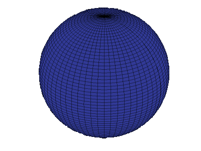

Research
Optics, Astronomy, Human-Computer Interaction
Characterizing Subaru Telescope's Deformable Mirror
Imagine swimming underwater and looking up at the clouds. From this perspective, the clouds are distorted and moving rapidly. The same concept applies for stars and our atmosphere: the twinkle in stars are due to variations in atmosphere refractions. These abberations make it difficult to precisely image extrasolar objects. [Image courtesey Damian Peach]
 Adaptive Optics (AO) is a subfield of astronomy instrumentation aims to reduce
these abberations. It utilizes a Deformable Mirror (DM) that has several actuators
within its mirror that shifts the wave front to fix image distortions caused by
astomspheric turbulance.
[Image courtesy ALPAO]
Adaptive Optics (AO) is a subfield of astronomy instrumentation aims to reduce
these abberations. It utilizes a Deformable Mirror (DM) that has several actuators
within its mirror that shifts the wave front to fix image distortions caused by
astomspheric turbulance.
[Image courtesy ALPAO]
The National Astronomical Observatory of Japan's (NAOJ) Subaru Telescope has an instrument that works to reduce abberations in order to image exoplanets called Subaru Coronographic Extreme Adaptive Optics (SCExAO). SCExAO's old DM has 188 actuators that deform the wave front. The new DM, designed by ALPAO, has over 3000 actuators and is called the AO3k.
I worked with Dr. Olivier Guyon and Dr. Julien Lozi to characterize the movement of each actuator in the AO3k. I found three unexpected behaviors with the AO3k including unresponsive actuators, uneven actuator response, and elevated actuator response around the mirror edge. I presented these findings to ALPAO and we sent the AO3k back to France for repairs in these behaviors. Julien Lozi submitted a paper to SPIE in June 2024 on the opto-mechanical design, integration and lab tests of the AO3k and additional imporvements on SCExAO, which you can see below.
Asteroseismic Detection Limits of Ground-Based Transient Surveys
 M-giant stars pulsate with long periods and with large changes in luminosity. They can pulsate with periods spanning days to months; for reference, our sun has an oscillation period of 5 minutes. These pulsations are the baseline for asteroseismology, the study of internal structures of stars via their oscillations. [Image courtesy AsteroSTEP Outreach]
It is typical practice to use space-based telescopes like TESS and Kepler to conduct asteroseismic analysis. However, when looking at specifically M-giant stars, space-based telescopes have some inherent drawbacks:
I worked with Professor Daniel Huber and PhD student Nicholas Saunders at the University of Hawai`i at Mānoa, Institute for Astronomy to see if we could detect these oscillations in M-giants with ground-based transient surveys. Although these surveys do not have the resolution of space-based telescopes, they have a field-of-view that captures the entire sky with observation baselines upwards of 2 years. Additionally, M-giant stars might have an amplitude oscillation high enough to be captured by the resolution of ground-based surveys.
Using data from the All Sky Automated Survey for SuperNovae (ASAS-SN) telescope, I found that ASAS-SN can retrieve these pulsations for M-giants with frequencies below 1 µHz (aka. periods above 11 days) within the 9th mag to 13th mag in the Gaia band. With this, ASAS-SN can characterize distances for ~5 million M-giants. I presented my work at the TASC7/KASC14 conference in Honolulu, HI, at the AAS243rd Conference, and in a talk at UH Mānoa's REU symposium. You can view my AAS poster and a recording of my talk below.